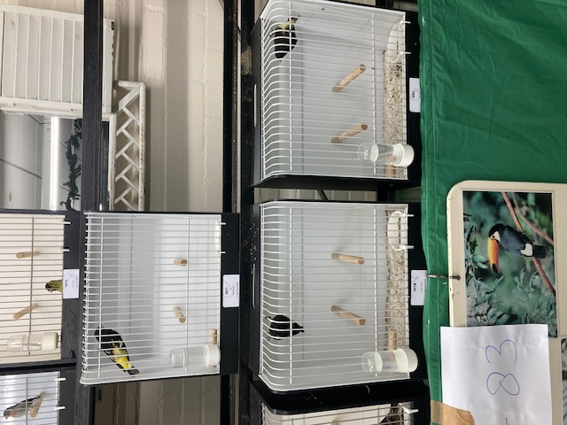
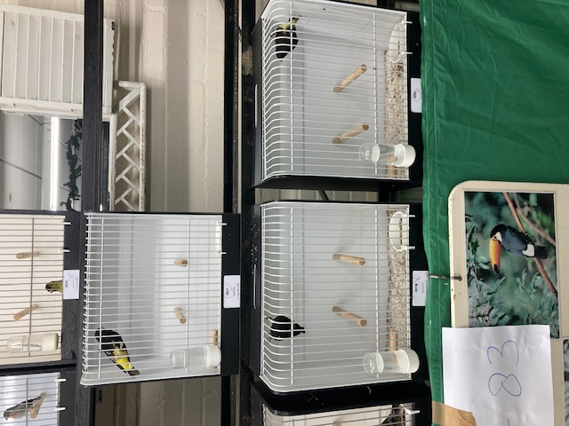
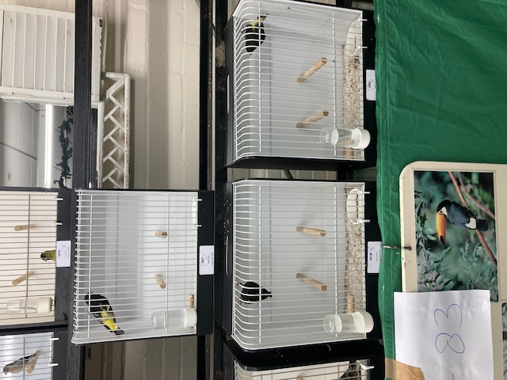

Welkom bij onze vogelvereniging, waar liefhebbers van vogelkweek samenkomen. Ontdek samen met ons de fascinerende wereld van gevederde vrienden, variërend van kleurrijke zangkanaries tot imposante roofvogels. Onze missie is het delen van kennis, het beschermen van natuurlijke habitats en het vieren van de verscheidenheid aan vogelsoorten die onze wereld rijk is.
Of je nu een doorgewinterde kweker bent of net begint met het verkennen van de vogelkweek, onze vereniging biedt voor ieder wat wils. Verken met ons de vreugde van het observeren van broedgedrag, de wetenschap achter succesvolle kweekprogramma's, en hoe je kunt bijdragen aan het behoud en de bescherming van deze prachtige gevleugelde wezens.
Word Lid
